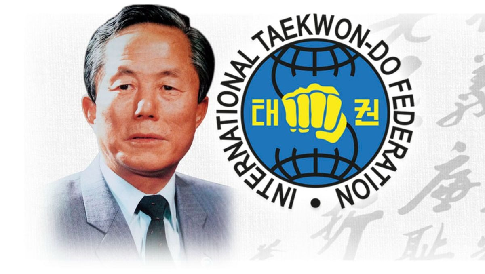

¿Qué es el Taekwondo ITF?
Se destaca por ser practicado por cualquier persona, sin importar la edad, el género o la condición física; posee un sistema dinámico y académico, con un sistema de aprendizaje progresivo. Donde se trabaja un fuerte código de ética, conducta, disciplina marcial, promoción de la salud, el bienestar y la seguridad personal.

Concretamente es:
- Un sofisticado y contundente método de combate sin armas que, sobre la base de determinados criterios, enseña a utilizar el cuerpo humano de un modo inteligente y eficaz para hacer frente a situaciones violentas. Cada arte marcial tiene sus propias características, las del Taekwon-Do son contar con un abanico técnico sumamente amplio entre lo que se destaca el uso de golpes y patadas particularmente potentes, veloces y precisos que se combinan en una esgrima corporal devastadora y espectacular. En los niveles más avanzados las técnicas dan lugar a principios de estrategia y movimiento superiores, de mayor discreción y alta peligrosidad.
- Un modo de ejercitación especial que trabaja la coordinación, flexibilidad, fuerza, equilibrio y agilidad en forma sistemática. A los niños los ayuda a su desarrollo armonioso, a los jóvenes los lleva a desarrollar al máximo su potencial atlético y dominio de su cuerpo, y a los adultos les provee un sistema de gimnasia que preserva la salud hasta muy avanzada edad.
- Un régimen de fortalecimiento y amalgama de lo físico y lo mental para el perfeccionamiento de la persona y el beneficio de la sociedad. Se conjuga la teoría con la acción, el pensar y el hacer. Un programa técnico preciso que se ve acompañado por una serie de principios de conducta que dan dirección y sentido último al entrenamiento.
- Una tradición oriental milenaria que, con sus orígenes remotos en China y Okinawa, encontró en Corea a mediados del siglo XX una forma nueva y original, especialmente desarrollada por el Gral. Choi Hong Hi para entrenar al ejército coreano, en cuyo origen participó una generación entera de maestros. Su formulación moderna y altamente racional supo receptar las más antiguas tradiciones. En el derrotero de transmisión de las artes marciales se cruzaron fronteras e idiomas, confluyendo diversas líneas como ocurre con las familias. Entre los apellidos de nuestros abuelos marciales encontramos nombres como shaolin chuan fa, kung fu, subak, kwon bop, kenpo, tode, karate, tangsudo y, por fin, Taekwon-Do. Nos precedieron monjes budistas, guerreros antiguos, padres entrenando en el silencio de la noche a sus hijos, milicias populares, expertos de un tiempo que se extinguía afanados en transmitir su saber a un tiempo radicalmente nuevo, un grupo de nacionalistas coreanos intentando reconstruir su país de las cenizas, y, finalmente, los maestros orientales que llegaron a la Argentina para forjarse un porvenir trayendo con ellos el tesoro de su cultura.
- Quien haya practicado durante décadas sabe que Taekwon-Do es belleza y crudeza, sensación y precisión, soltura y rigor, silencio y expresión, inocencia y realismo, tradición e innovación, fortaleza y sensibilidad, pertenencia y libertad, obediencia y creatividad, juventud y experiencia, arrojo y prudencia, rutina y eureka, búsqueda y hallazgo, aislamiento y relación, humildad y autoridad, gratitud y generosidad, seriedad y gozo, adquisición y desprendimiento, dedicación y abandono. El arte marcial siempre es medio, nunca fin. Es una herramienta hermosa y noble al servicio de la sacralidad de la persona, portadora de chispa divina.
- Aunque los profesionales nos desvelemos y obsesionemos por dominar su técnica, nos debemos recordar que el arte marcial no es la vida ni la debe consumir o colonizar, sino que por el contrario, si ha de servir para una cosa, es PARA VIVIR PLENAMENTE.